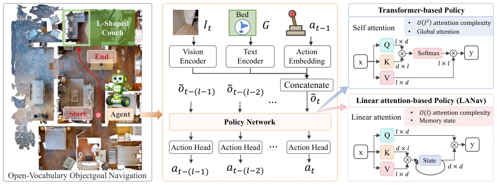
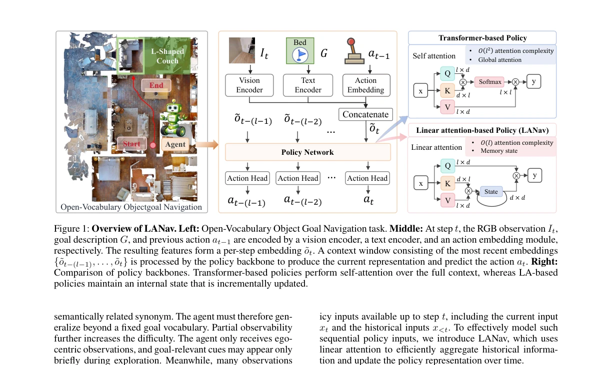
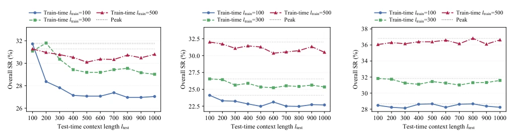
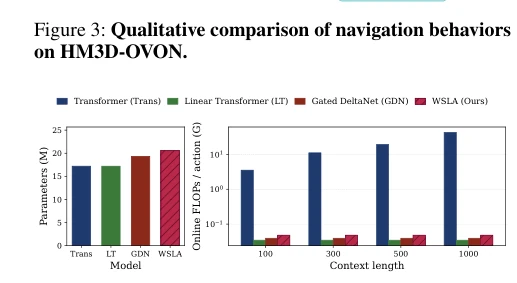
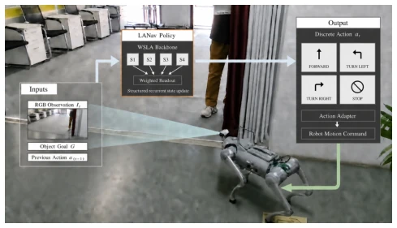

This paper attempts to pull the Transformer off the throne of navigation, after all, in open-vocabulary navigation, the Transformer's self-attention mechanism seems to have somewhat "poor memory"; the longer the context, the better it is not necessarily, and it may even degrade. The authors proposed LANav, replacing self-attention with Linear Attention, and devised a WSLA mechanism that expands states and then weights them. The results are indeed excellent; on HM3D-OVON, the success rate is 36.4%, 6.3 percentage points higher than Transformer, and even on real hardware running Unitree Go2, it reaches 82%. However, the title is a bit too ambitious; "Beyond Transformer" is actually just swapping a backbone, the real challenge lies in the design of state updates rather than the architecture itself, and the model depth is relatively shallow, raising doubts about future scalability, after all, it is just wrapping an RNN variant as LA, and does not involve more complex planning modules.
研究动机Motivation
具身智能里的开放词汇物体导航（OVON）要求代理在部分可观测环境下找目标。现有方法主要靠 RNN 或 Transformer。RNN 像 LSTM 处理长依赖不行（Fang et al. 2019; Fortunato et al. 2019）。Transformer 虽然用自注意力整合历史，但作者发现增加上下文长度并不能提升性能（Yokoyama et al. 2024）。这说明自注意力在导航状态整合上可能不合适。需要一种能结构化更新状态、适应长程依赖且计算高效的机制。OVON 的语义模糊性加剧了状态更新的需求，传统 RNN 容易遗忘，Transformer 计算冗余。
Open-vocabulary object navigation (OVON) in embodied AI requires agents to find targets in partially observable environments. Existing methods mainly rely on RNN or Transformer. RNNs like LSTM cannot handle long dependencies well (Fang et al. 2019; Fortunato et al. 2019). Although Transformer uses self-attention to integrate history, the authors found that increasing context length does not improve performance (Yokoyama et al. 2024). This suggests that self-attention may be unsuitable for navigation state integration. A mechanism is needed that can structurally update states, adapt to long-range dependencies, and is computationally efficient. The semantic ambiguity of OVON exacerbates the need for state updates; traditional RNNs are prone to forgetting, and Transformer has computational redundancy.
The overall process follows the DAgRL design; inputs RGB, language target, previous action, encoded via SigLIP then enter the policy backbone. The core innovation is WSLA. It expands each attention head into E sub-states, each sub-head independently maintains a state matrix. Weighted aggregation of sub-state outputs is performed via learnable weight vectors to enhance state representation capability. Compared to the O(l^2) complexity of standard Transformer, LA is O(l), and state retention is regulated via gating mechanisms (such as Gated DeltaNet). WSLA further introduces state expansion and weighted reading on this basis, balancing capacity and efficiency. Experiments compared Linear Transformer, DeltaNet, and Gated DeltaNet, finding that the more regular the structure, the better the performance.

Figure 1: Overview of LANav. Left: Open-Vocabulary Object Goal Navigation task. Middle: At step t, the RGB observation It, goal description G, and previous action at−1 are encoded by a vision encoder, a text encoder, and an action embedding module, respectively. The resulting features form a per-step embedding ˜ot. A context window consisting of the most recent embeddings {˜ot−(l−1), . . . , ˜ot} is processed by the policy backbone to produce the current representation and predict the action at. Right: Comparison of policy backbones. Transformer-based policies perform self-attention over the full context, whereas LA-based policies maintain an internal state that is incrementally updated.
实验Experiments
在 HM3D-OVON 上测试，指标为 SR 和 SPL。基线包括 GRU、Transformer、DAgRL。WSLA 在 VAL SEEN SYN 上表现最好，平均 SR 36.4%。距离分层显示长距离任务增益更大（Table 2）。消融实验证明状态扩展和加权都有贡献（Table 3）。效率上，WSLA 在线 FLOPs 远低于 Transformer（Fig 4）。真机实验在 Unitree Go2 上完成 50 次测试，成功率 82%（Fig 5），证明了 sim-to-real 能力。HSSD 迁移也显示鲁棒性，Zero-shot 提升显著。
Tested on HM3D-OVON, metrics are SR and SPL. Baselines include GRU, Transformer, DAgRL. WSLA performed best on VAL SEEN SYN, average SR 36.4%. Distance stratification shows larger gains for long-distance tasks (Table 2). Ablation experiments prove that both state expansion and weighting contribute (Table 3). In terms of efficiency, WSLA online FLOPs are far lower than Transformer (Fig 4). Real-world experiments were completed on Unitree Go2 with 50 tests, success rate 82% (Fig 5), proving sim-to-real capability. HSSD transfer also shows robustness, Zero-shot improvement is significant.

Figure 1 illustrates the LANav architecture, which follows the DAgRL policy design (Yokoyama et al. 2024) by separating visual encoding, goal encoding, previous-action embedding, temporal information integration, and action prediction. At each step t, the RGB observation It is processed by a frozen SigLIPRGB encoder (Zhai et al. 2023), yielding vt = fvis(It) ∈R768. The goal description G is encoded by a frozen SigLIPtext encoder as g = ftext(G) ∈R768. The goal embedding is computed once and remains fixed throughout the episode. To provide behavioral context, the previous action at−1 is mapped to a 32-dimensional vector by a learnable embedding layer, ea t = fact(at−1) ∈R32. The visual, goal, and previous-action embeddings are con- catenated and linearly projected to the backbone hidden di-

Figure 2: Effect of context length. Overall SR (averaged across validation splits) as a function of test-time context length ltest. Each curve corresponds to a model trained with ltrain ∈{100, 300, 500}.

Figure 4: Parameter count and computational cost. Model parameters (left) and online FLOPs (right) of different policy backbones under identical architectural settings.

Figure 5: Real-world validation. Deployment of LANav with the WSLA backbone on a physical robot for open- vocabulary object-goal navigation.